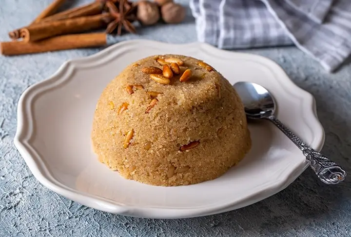

<- Return to Main Page
İrmik Helvası

Description
Irmik Helvasi (semolina halva) is a traditional Turkish recipe for a classic dessert of halva made from semolina flour.
Serve with cinnamon sprinkled on top if desired. This dish can be served warm or cold.
Ingredients
- 5 cups water
- 3 cups white sugar
- 2 cups butter
- 2 ½ cups semolina flour
- ½ cup pine nuts
Directions
- Combine water and sugar in a saucepan. Bring syrup to a boil.
- Melt butter in a separate saucepan over medium-low heat, about 5 minutes. Add semolina and pine nuts. Cook, stirring continuously, until golden brown, 20 to 30 minutes.
- Pour syrup carefully over the semolina mixture. Reduce heat to low. Cover and simmer until nicely thickened, about 5 minutes. Let rest for 15 minutes. Divide halva over several small dishes.